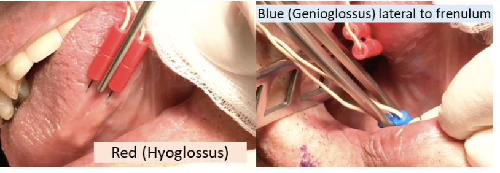
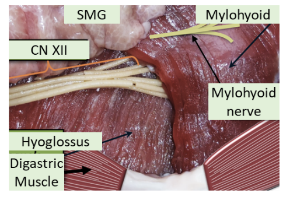

Head & Neck Surgery – Clinic Guide
Dr. O’Leary’s Clinic
Correct the chief compliant. Put type/site of cancer TNM stage and treatment (with date) at the beginning of every note (T2N1M0 HPV+ left base of tongue SCCa s/p concomitant chemoradiation with weekly cisplatin completed on 10/13/2018.)
Use Dr O’Leary’s New patient or Follow up visit templates
ALWAYS CC op-note to primary care physician, other care providers (rad onc, med onc) and referring physician’
Spray the patients with Lidocaine/Afrin spray prior to presenting to Dr. O’Leary so there is enough time for local anesthesia and decongestion
Dr. Wein’s Clinic
1. if you can, dictate your notes and minimize the amount of templating
2. always give patients a copy of their pathology, lab, or imaging results at the time of an office visit
3. document and circle the appropriate spaces on the encounter form if:
smoking cessation advised
imaging/labs ordered or surgery booked
imaging/labs/path reviewed
procedures performed
4. Always CC the corresponding MD at the end of the note with “CC: Andrew Scott, MD”, and not with less formal approaches like “Dr. Scott, PCP”
Dr. Tracy’s Clinic
1. Similar to Dr. O’Leary’s clinic flow
Burning Mouth Consults
Dr. O’Leary’s workup
- Obtain lab tests: ANA, SS-A, SS-B, TSH, fasting glucose, A1c, CBC w/ diff, ferritin, Vit B1, B2, B6, B12, folate, Mg2+, Zinc
- Biopsy if visible lesion
- Consider patch testing
Aphthous ulcer treatments
triamcinolone acetonide with carboxymethylcellulose paste (Kenalog in Orabase)
Fluocinonide (Lidex) gel
Peridex mouthwash
Aphthasol paste – Aphthasol oral paste is usually applied 4 times each day--usually after breakfast, lunch, and dinner, and at bedtime.
Oral B12 melts (made by same company as Xylimelts)
Inspire Consults
Check diagnosis of sleep apnea: AHI, (must be btw 15-65 w/ <25% central apneas) date of sleep study (should be in last 3 years). Ask previous nasal, palate, tonsil surgeries. Still having daytime fatigue. Check social hx: work history/driving problems. Ask about heart failure/afib
Patients must be >21yo. BMI<32
Check CPAP usage: <4 hours/<5days tolerated and reasons for poor tolerance (claustrophobia etc).
Contraindications: Pts w/ neuromuscular disorders or those who can’t operate the remote at night. Pregnant pts. Pts w/ complete concentric collapse of the soft palate of sleep endoscopy
Thyroid Nodules
Nodules incidentally found on imaging
Should always be confirmed by Thyroid & Cervical U/S
Nodules >1cm seen on PET scans that are confirmed on thyroid U/S should get an FNA
Initial workup of palpable or incidentally found nodules
TSH [Free T4] and Ultrasound
Normal or high TSH → no need for reuptake radionuclide cscan
Low TSH → get a Iodine123 or Technetium99 reuptake scan
"Hot Nodule" → evaluate for hyperthyroidism
"Cold Nodules" have a 5% risk of cancer and should get an ultrasound
Multiple nodules? Evaluate each one separately.
If TSH low or normal. Get I123 scan to see if there are autonomous nodules
FNA iso or nonfunctioning nodules.
FNA
Don't bother if its completely cystic
Perform FNA if nodule is (A) >2cm or (B) >1cm + suspicious features
Suspicious Ultrasound features (70% chance of malignancy)
Hypoechoic - think hypOH DEAR ITS CANCER
partially cystic and iso/hyperechoic are less worrying features: perform FNA if >1.5cm
Microcalcification or rim calcifications
Increased central vascularity
Tall than wide (think a Cachetic patient) = bad. Wider than tall (fat person) = good
Irregular margins
Bethesda system - Interpreting Results
Malignant (99% risk) & suspicious for malignancy (70% risk)
Go to Surgery
Indeterminate cytology - Two types
Follicular neoplasm or suspicious for follicular neoplasm or Hurthle Cell (25% risk of malignancy)
Pretty much all of these are surgically excised. Affirma to supplement decision making
FLUS (follicular lesion of unknown significance) or Atypia of undetermined significance — 14% risk
Can observe or excise. Affirma test can help you rule out malignancy
Surgery: if excision is planned - do a lobectomy unless there are reasons in the history that make us more suspicious for malignancy
Nondiagnostic—(around 1-4% risk):
repeat U/S guided FNA. Most people wait ~3months but should repeat sooner if there are concerning U/S findings
Can excise if suspicious u/s findings or if its growth >20% in 2 directions
Benign — 2.5% risk
Follow up these patients
Suspicious U/S features: repeat U/S & FNA within 12 months
Otherwise repeat U/S in 12-24months and FNA if (a) growth >20% in 2 directions or (b) nodule develops suspicious features
You can stop following any nodule that's had two benign cytology results. Its benign, get over it
Follow Up
Nodules that met criteria for FNA but were benign: see above
Nodules that did not meet criteria for FNA
repeat U/S in 12-24months (you don't need to follow spongiform or purely cyst nodules)
Nodules that are >4cm or cause compressive symptoms can be surgically removed
Preoperative: Guidelines recommend documentation of voice and performing a FOE prior to Thyroid surgery on EVERY patient. Discuss risk of thyroid surgery to voice. Discuss findings of FOE w/ anesthesia.
Perioperative: should identify RLN and SLN. Intraop nerve monitoring is optional. No opinion on decadron
Postop: should perform FOE on patients w/ voice change post op. If abnormal voice or VF mobility abnormality, patients should f/u with SLP
Adult Neck Mass – Clinical Practice Guideline
Don’t routinely give antibiotics unless other signs of infection exist
Suspicious if: present for >2 weeks w/o change in size or if on exam mass is (1) fixed to adjacent structure (2) firm (3) >1.5cm or (4) has ulceration of overlying skin or history highly suspicious
In these patients, do targeted physical exam (FOE etc)
Strongly recommend CT neck (U/S or MRI ok) or performing an FNA on these suspicious neck masses
FNA should be done INSTEAD of an open biopsy
Cystic masses: don’t assume that they are benign
If testing is negative:
Can either with open biopsy (should always be done with a direct laryngoscopy)
Or could do additional testing (CBC, ANA, SSA/SSB, ESR, TSH, PTH, EBV,CMV, PPD, Bartonella, Thyroid U/S, CT chest /w contrast, Thyroglobulin FNA-needle wash assay
Nerve Sheath Tumors
Paragangliomas (Glomus tumors)
Glomus Jugulare: supplied by ascending pharyngeal a.
Glomus Tympanicum: arise from Jacobson’s nerve (CNIX)
Carotid Body: MC in H&N: internal carotid posterior and external carotid anteriorly (Lyre sign)
Vagal paraganglioma: Displaces carotid anteriorly and medially
Salivary Glands
Innervation:
- Sup. Salivary nuc → GSPN (pregang. parasymp.) [CN7] → pterygopalatine ganglion → lacrimal
- Inf. Salivary nuc → Lesser petrosal [CN9] → Otic ganglion → auriculotemporal n. → parotid
- Sup. Salivary nuc → Corda Tympani [CN7] → Submandibular ganglion → submandibular gland
Melanoma
Ask about:
Sunlight exposure, history of skin burns, family history (xeroderma pigmentosum, familial atypical multiple mole melanoma syndrome, dysplastic nevus syndrome)
Presents as a mole-like growth with "ABCD" (ABCD is diagnostic not prognostic )
Asymmetry, Borders are irregular. Color is not uniform. Diameter > 6 mm.
Workup:
Ideally: excisional biopsy w/ 1-2mm narrow margins. If too large, can do punch biopsy however this is subject to sampling error so if negative, strongly consider repeating. This will give you information to perform the wide local excision later.
Patients with:
Stage IB or higher: should get a CXR (r/o lung mets) LDH (eval for liver mets)
Palpable LNs or imaging findings for enlarged LNs: get U/S guided FNA to eval for metastatic LN disease
Stage III disease: some advocate for CT C/A/P to look for distant mets (CT chest is most important)
Stage IV disease: PET-CT C/A/P, MRI head, refer for clinical trials
Prognosis depends on variant: worse with ↑Breslow Depth, ulceration, M>F, and Head/Neck location
Occiput and cheek most common sites of H&N
Markers
HMB-45 (specific). S-100 sensitive. Melan A. MART-1
Variants include
Superficial spreading—most common subtype; dominant early radial growth results in good prognosis.
Lentigo maligna melanoma (LMM)—lentiginous proliferation (radial growth); best prognosis. Associated with sun-exposed skin and the elderly
Nodular—blue/blackish, looks like hemangiomaearly vertical growth; poor prognosis
Acral lentiginous—arises on the palms or soles, often in dark-skinned individuals; not related to UV light exposure
Desmoplastic-Neurotropic Melanoma (DM): often are amelanotic. High rate of recurrence
Clark levels: only useful for prognosis in T1 lesions.
epidermis only = stage I.
Into papillary dermis = II.
All of papillary dermis =III.
Invades reticular dermis = IV.
Into subcutaneous tissue: V
Melanoma TNM Staging
N0 N1 T1a IA III T1b IB T2a T2b IIA T3a T3b IIB T4a T4b IIC Survival: T1 95%, T2 80-95%, T3:40-85%. T4:10-30%
Treatment
Surgical margins
Tis = 0.5mm margin
T1 (<1mm) = 1cm margin.
T2 (1-2mm): do 1-2cm margin
T3+ (>2mm): do 2cm
T2/T3/T4
Adjuvant: may consider interferon alpha 2b (Stage III+)
N0 neck: consider sentinel LN biopsy (SLNB). Especially if
<60 yo especially for tumors w/o ulceration, Ulceration, High mitotic rate, Angiolymphatic invasion, Clark level IV
N1-N3: Neck dissection
Superficial parotidectomy + MRND if primary location is: anterior/lateral scalp, temple, lateral forehead, lateral cheek , ear (basically anything anterior to the plane of the EACs)
Level II-V neck dissection: If primary is scalp/occiput posterior to the coronal plane of the EACs.
Special considerations:
Lentigo maligna melanoma (LMM) — tends to have subclinical spread (often has positive margins). After resection, take a circumferential "square" margin (Anderson et al. Johnson et al.)
Chemo:
Interferon alpha-2b — use for stage III, consider for T2+ lesions. Can cause hepatic and cardiac toxicity.
Dacarbazine (DTIC) — stage IV
Sentinel LN biopsy (SLNB) w/ pre-operative lymphoscintigraphy
2-4 hours preop, patients get radioactive colloid into melanoma. Inject methylene blue into melanoma (dermis). Dissect out the hottest radiactive node and all other nodes that are above 10% of the cpm value of the hottest node.
Head & Neck Squamous Cell Carcinoma
Prognosis by Stage
Stage 0 —99%
Stage 1 — 90-92%
Stage 2 — 75-85%
Stage 3 — 50%
Stage 4 — 25-35%
Who gets chemotherapy
Nasopharyngeal CA: Stage III-IV, some Stage II
Unresectable H&N Ca
Laryngeal CA: induction cisplatin/5-FU for organ preservation
Unknown Primary – patients with N2,N3 disease
Patients with positive margins or lymph nodes that have ECS
Who gets radiation therapy to neck
Patients with N1 disease + extracapsular spread
Patients with N2-3 disease
Who gets a neck dissection:
Classic training is that if risk of spread to lymph nodes is >15-25%, should do neck dissection
N0 disease in:
Oral Cavity - I - III
Oropharynx - II - IV
Hypopharynx/Larynx - II-IV, VI when appropriate
Subglottic - II-IV and VI
Oral Cavity CA
Management
Excision w/ reconstruction. Tumors <2cm can be approached transorally
Mandible: Abutting periosteum - can get away with a marginal mandibulectomy. Invasion of mandible - need a segmental resection
N0 necks: elective ipsi/bilateral (b/l if midline) level I-III (Can avoid neck dissection in T1/2 N0 lower lips).
N1+ neck: selective I-III ND.
RT if positive nodes. Chemotherapy if adverse features (positive margins, ECS on LNs)
Oropharyngeal CA
Sites:
Tonsil: MC, aggressive, high risk of occult LN spread
Base of tongue: also aggressive w/ high rates of LN spread
Posterior pharyngeal wall and soft palate = less aggressive
T1-T2: excision vs primary XRT.
N0: XRT or elective unilateral or bilateral ND levels II-IV.
N1: XRT selective ND II-IV.
N2-3: Chemorads + selective ND
T3-T4: typically treated with radiation
Laryngeal CA
Premalignant Glottic Lesions
Hyperplasia/Hyperkeratosis - not a risk for malignancy
Dysplasia
Severe dysplasia/Carcinoma in situ- risk is 15-25%
CIS has features of malignancy but not invaded beyond basement membrane
Excisions
Microflap excision: Dissects superficial lamina propria and spares vocal ligament
Hypopharyngeal CA
Hypopharynx: Level of hyoid bone to the cricopharyngeus behind the larynx
Piriform sinus is most common location
Post-cricoid region: think plummer-vinson syndrome
Most are diagnosed at advanced stage
Hypopharynx may have skip lesions
Management
T1, some T2, N0 - partial laryngopharygectomy
Always do Level II-IV neck dissection even in N0 disease
Techniques
Partial laryngopharyngectomy
For T1 (some T2) piriform sinus cancer
Must involve medial wall and be 1.5cm away from apex
Lateral + suprahyoid pharyngectomy
For posterior cricopharyngeal wall CA
Total laryngectomy with partial pharyngectomy
For advance CA and post-cricoid CA
For these, need reconstruction with tension-free closure.
LARYNGEAL
Sites
Supraglottis: High rate of note metastasis. Typically to bilateral II-IV
Glottis: Most common site in larynx
Less spread due to barriers (vocal ligament, thyroglottic ligament)
Anterior commissure - no inner perichondrium allows for anterior spread to thyroid cartilage
Subglottic: Rare, poor prognosis
Treatments
Laser surgery
Ideal for T1 glottic or supraglottic SCCA. Risk of scarring
Anterior commissure involvement - associated with high recurrence rates
Surgery
Cordectomy—Indication: T1 glottic cancer restricted to middle 1/3 of vocal fold
Conservative/Function Laryngectomies:
Contraindication to partial laryngectomies is poor pulmonary function
Vertical partial laryngectomy (Hemi laryngectomy)
high risk of aspiration, must have really go pulmonary
Can decrease risk by turning to operated side and performing a chin tuck
T1/T2 glottic CA that doesn't extend beyond 1/3 of opposite cord or involve posterior commissure
Supraglottic partial laryngectomy (Horizontal Hemi-laryngectomy)
For T1/T2 supraglottic tumors
preservation of both true vocal cords and arytenoids - preserves voice
Disadvantage: needs initial trach, increased aspiration risk as SLN is taken
Supracricoid partial laryngectomy
Must preserve one functional cricoarytenoid unit (arytenoid, cricoid and hyoid and associated musculature, plus the superior and recurrent laryngeal nerve)
Resects supraglottis plus vocal fold, thyroid cartilage, and paraglottic space
Select T3/T3 supraglottic/glottic CA - must not have arytenoid fixation
Open partial laryngectomy: Resects anterior commissure for select cases
Contraindications:
Cartilage invasion, VF fixation, interarytenoid involvement, tongue base involvement, poor performance status
Total laryngectomy:
With addition of pharyngeal structures such as piriform sinus or laryngeal pharyngeal wall if needed
Radiation: Used for T1/T2 lesions
Neck Dissections
Hypopharyngeal: Yes starting at T1 (With T2 or N1, should also do Level VI)
Supraglottic: yes for T1 N0
Post- H&N Cancer Treatment Follow-up Guide:
Interval H&P w/ fiberoptic or mirror exam:
Year 1: q1-3months.
Year 2: q2-6months
Year 3-5:q4-8months
After 5years: q1year
Get post-therapy (surgery or XRT) CT vs PET-CT 2-3 months (for most ppl – can probs avoid in T1/T2 glottic CA since It only picks up 7-8mm lesions and FOE is more sensitive)
Check CXR and thyroid function tests q6-12 months
Evals: SLP, dental, and nutrition evals as needed
Head & Neck – OR Guide
Dr. Tracy’s Radial Forearm Free Flap
Raising the flap
Prep:
Shave arm
Prep arm, shoulder, chest with Chloraprep while someone holds the arm, and prep the head and neck in the usual fashion
Tuck half sheet covered with towels under the flank. Arm needs to rest on arm board, place sterile drape on arm board.
Place a towel around the armpit and use Edna to clip it. Then, wrap a sponge around the thumb to supinate the forearm and clip the sponge to the arm board with an Edna.
Then cover the arm with towel to keep sterile.
Dr. Tracy will then wrap the arm with an elastic wrap to drain it off its venous supply. Then the tourniquet will be applied as a setting of 250 and a timer for 1 hour starts.
Begin by incising the lateral aspect of the skin paddle to find the Cephalic vein which is preserved and follow it all the way up to the antecubital fossa. Next use forceps to find the vascular pedicle then you can raise the flap on the contralateral side and isolate and tie off the vascular pedicle and start lifting the flap
Dr. O’Leary’s Thyroidectomy
Laryngeal nerve monitoring tube is needed and the Medtronic NIM monitor. No paralytics, and needs antibiotics. Watch anesthesia’s glidescope to ensure that the blue stripe is adjacent to the vocal cords. Place the gel ax roll as the shoulder roll and recheck the tube placement with the glidescope. Attach the nerve monitor consul at the head of the bed and tape it in place. Ensure that the nerve monitor is working appropriately by tapping in the neck. Mark the neck along a nerve crease if possible 2-3 cm above the sternal notch. Inject with 1% lidocaine with epi. Prep with betadine.
Dr. Dhingra’s
Inject incision in preop.
Make generous incision 2 inches above the sternum then make the incision down past the platysma on both sides and use the Bovie to develop yourself sub-platysmal flaps. Use your finger as a come hither motion to get them going and work a free edge. Go down to the sternum on the inferior flap. Go up to the cricoid/thyroid notch superiorly.
Then travel down midline kind of like you would do with a trach. Use kelly’s to present the midline fascia for someone to divide with the bovie.
Keep going making sure you’re a midline until you come down to the thyroid. Be careful inferiorly because there is a plexus of vessels and become very vascular. Here use the ligasure to make sure you don’t make anything bleed.
Once you found the thyroid then you want to work the sternothyroid off the thyroid to develop the lateral edge of the thyroid. To do this, get two peanuts: one using to retract the thyroid towards you and the other to push on the undersurface of the sternothyroid to elevate it off. Once you have enough of an edge, ask for the lady finger for someone to retract. Once you’ve developed the lateral edge, keep doing it up towards the superior pole. Here there are a lot of vessels so be sure to use the Ligasure.
This is the part to pay attention to: developing the superior pole is the one of three or four critical steps. You should not look for the superior laryngeal nerve necessarily but you should be cognizant of the cricothyroid muscle.
Once you have freed the superior pole you can develop the middle a little bit more but don’t get too deep/posterior. This is when you have to check to see where your current laryngeal nerve is remember the different landmarks.
Located in simon's triangle: trachea, carotid, and inferior lobe.
RLN is deep to berry's ligament
Tubercle of Zuckerkandl: RLN is medial to it. Superior thyroid is superior to it
Left RLN is more medial than right RLN. Left RLN is reliably deep to inferior thyroid a
Superior Parathyroid is posterior to RLN. Inferior parathyroid is anterior to RLN
In reality you’re going to use a snit forcep spreading in the direction of the nerve and using the stimulator. Once you found it follow superiorly and inferiorly see that you are confident of the plane typically people follow it all the way into its insertion.
Once you’ve done that you can free the rest of the middle and inferior pole of the thyroid and of the trachea. You can do this relatively quickly as the nerve is protected. Once the thyroid only attached to the trachea, use a Kelly and spread along the trachea in the midline superior to inferior (you can use a bovie to take it off the trachea as well as the plane is pretty well developed). Then you can transect half of it and do the otherside. Dump some thrombin soaked Gelfoam into the resected area close the straps with 3-0 Vicryl. Close the platysma with 4-0 Vicryl and close the wound with a subcuticular 5-0 Monocryl.
Dr Wein
Similar set up to Dhingra’s. When you lift the upper subplatysmal flap, roll skin over a wet 4x8 gauze and suture to mandible with 2-0 silk to retract it. Use 3 lone stars on lower flap. Split the straps. Free the middle of the thyroid. Use middle finger on gauze to retract thyroid towards you. Use a ladyfinger to retract straps. Bipolar through fascia. When you approach superior pole, hug gland. Dr Wein doesn’t necessarily go hunting for the nerve
id="dr-wein-inspire-hypoglossal-nerve-implants">Dr Wein INSPIRE Hypoglossal Nerve ImplantsSet Up:
Patient rotated 180. Tube taped to the left
Place shoulder roll. Tuck right arm. Leave mouth open
NIM Monitor (NIM 3.0): 3 lead setup:
Leads 1 & 2 go into tongue (include=blue, exclude=red)
Lead 3 (purple) goes into marginal mandibular

Figure 11: INSPIRE Implant Training, 2016
Incisions:
Neck: 4-6cm starting from anterior aspect of submandibular gland to ~1cm from midline.
Mark EJ, SMG, midline, hyoid, mandible
Implant Pocket: 5cm inferior to clavicle. 5.5cm in length. Between deltopectoral groove & sternum
Sensor: Use inferolateral margin of pec (should be 5th intercostal space)
 4-5cm incision lateral to nipple line
Prep
Betadine from upper lip to mid abdomen. As far lateral as you can go to just past midline
1020 drape just above mandible (so tongue is visible)
Drap off the rest. Then place ioban from superior to inferior.
Split drape: drap up to head. Then half-drape around head & top of 1000 drape (allow tongue to still be visible
Steps:
Neck: Incision through past platysma. Watch out for marginal mandibular (its just under platysma). Dissect to find mylohyoid/digastric tendon junction. If you first find the ant. belly of digastric, follow it posteriorly to digastric tendon. Then tunnel under DG tendon to free the entire length of posterior margin of mylohyoid. Retract mylohyoid anteriorly. This exposes the Ranine vein and the hypoglossal nerve.
Isolate nerve fibers of hypoglossal nerve. Use bipolar NIM electrode to determine inclusion (GGh, GGo, T/V)/exclusion (HG/SG) fibers. Use vessel loop to help retract nerve to pass stimulator cuff around inclusion fibers
Pass stimulator under digastric tendon then tie stimulation lead to anterior belly of digastric. Pack w/ baci-soaked gauze
Implant Pocket: Incision down to but not through pec major fascia. Dissect pocket inferiorly to about 6cm deep
Throw 2 silk sutures on medial edge of incision one 1cm superior to the other (vertical plane)
Sensor lead: Incision on 5th intercostal space. Serratus fibers = most superficial running lateral to medial (inserting on ribs). External intercostals: run superior/lateral to inferior/medial (looks like packing tape). Make incision on medial aspect of incision through ext intercostals and dissect through until internal intercostals (running superior/medial to inferior/lateral) are seen.
Use malleable to dissect plane btw ext & int intercostals (medially between ribs). Insert electrode. Fix sensor to ext intercostals w/ 4x 3-0 silk on RB-1
Tunnels: Use tunneling shaft from neck incision to implant incision (avoid ext jugular) in the subplatysmal plane. Then tunnel from implant incision above pectoralis to sensor lead incision. Pass sensor leads from neck and chest sensors to implant. Put leads into implant. Screw in (press down and rotate for 4 clicks). Tie implant to pocket with 2-0 silks
Close: 4-0 or 3-0 vicyrl for deeps. 5-0 monocyrl for superficial. Wash incision. Steri-stripes (perpendicular along incision than 3 parallel to incision to hide any blood stains. Unmarked 4x8 Gauze over incision taped down with Medipore tape
Post-op
No antibiotics
Pain medication
Give post-INSPIRE d/c instructions
Get Lateral Neck and CXR in PACU. Make sure patient has no PTX
Head & Neck – Post-op Guide
Dr. Wein’s patients
Always change dressing on rounds, replace Velcro trach ties, clean any dried blood/secretions etc. Take pride in their appearance.
You don’t require permission to pull JP/Channel drains if their output has dropped off. Just use common sense
post-op follow up appointments should be 10-14 days for patients who will be waiting on pathology results
Be active in communication with the family.
Dr. O’Leary’s patients
Typically removes drains after 3 shifts where output is <20cc. Check before removing any drains
Generic Free Flap [Tracy]
Neuro:
- Continue standing tylenol through DHT
- Continue oxycodone through DHT for severe pain, IV dilaudid for breakthrough pain
- No NSAIDs until POD#7
HEENT:
- Start peridex swabs TID
- Continue Q1H flap checks for total 48 hours
- Then q2h flap checks for 24 hours
- ENT resident flap checks BID
- Strict NPO, no use of oral swabs unless for medication
- No circumferential neck ties
CV:
- MAP goal >60
- Avoid pressors as much as possible, please give fluid boluses or transfuse with RBC if hypotensive
RESP:
- 7.0 Shiley proximal XLT trach in place with 4-point sutures, and superior and inferior stay sutures
- In the event of decannulation, pull the stay sutures towards the skin to bring the trachea more superficial and replace the tracheostomy tube. Patient is also intubatable from above
GI:
- Advance tube feeds to continuous rate (impact peptide)
- OK for meds via DHT
- Continue bowel regimen
- Continue daily electrolyte checks, replete as necessary
- STRICT NPO. No swabs or ice chips.
ID:
- Daily CBC
- S/p unasyn through 8/10
- Peridex TID
- Bacitracin to incisions BID
GU:
- Continue to monitor strict I/Os
- Remove foley when able
HEME:
- Start prophylactic dose lovenox 40 mg QD
- CBC daily
MSK:
- Continue to monitor leg for compartment syndrome
- Obtain right leg orthotic
- Wound vac in place for 5 days
- Work with PT daily, OOB
- PT/OT consult
Laryngectomy
Diet: NPO
Nursing:
humidified air at all times (unless HME in place)
keep laryngectomy tube in place, clean once daily
suction laryngectomy stoma as needed for secretions
apply bacitracin ointment to chest and neck twice daily
sign above bed saying patient cannot be intubated from above
Leave trach collar loose fitting ( 2 fingerbreadths distance from neck)
If stoma vent is dislodged, it is NOT an airway emergency; gently place back into stoma
Rounds: check for crusting in the stoma – any exposed cartilage? In radiated patients, look out for possible fistula formation (tube feeds coming out neck)
Thyroidectomy
Check PTH and iCa2+ post-op in PACU. If PTH abnormal, check iCa2+ q4-6hours. If normal, recheck iCa2+ q8hrs.
levothyroxine: according to endocrine, levothyroxine dose in mcg = 1.7xpt’s weight (kg)
If hypocalcemic – replete Ca2+ (see electrolyte section)
Tracheostomy Tube Placement
Post op CXR
As RT to get a spare trach (plus size smaller) in the room. Make sure fresh inner cannulas, trach ties are in the room
Make sure nursing has suctioning set-up
Order routine trach care (suctioning PRN, humidified air)
First trach change:
Done on POD5-7. Longer if you expect trach change to be difficult: deep neck, high lung compliance (aka high PEEP requirement).
Before trach change: ask RT to put new trachs at bedside and ask the RN to verify the correct type is there. Also ask the RN to give some pain medication just before change.
Need: shoulder roll, headlight, new trach, 10cc syringe, lube, suture scissors, suction set up in room, flexible ‘chimney’ suction, yankeur suction, 4x4 gauze w/ saline, Velcro trach tie, allvyn dressing (prn)
After 1st trach change: RT can change the trach
Chyle Leak:
If suspected, collect from JP and send for triglycerides, chylomicrons. Also get serum triglycerides. Positive if TG >100mg/dL if TG(in JP) > TG serum or if there are any chylomicrons
Low output: <500cc/day:
- octreotide 100 𝜇g SC Q8 or 3-6mg IV qdaily. Can cause HTN and gallstones.
- Medium chain triglyceride diet [For tube feeds switch to Portagen]
High output >500cc/day: typically need to go to OR.
Head & Neck Staging - 8th Edition
AJCC 8th Edition Staging
GENERAL THEMES: For Oral Cavity, Oropharynx, Hypopharynx, Salivary Gland, Thyroid CA (in general)
T1—<2cm
T2— 2-4cm
T3— 4+cm
In general, for Laryngeal Cancer
T1 - same subsite
T2 - extends to nearby subsite
T3 - fixes vocal cords
T4 - extends past borders of larynx
For oral cavity, p16 negative OP, larynx, salivary gland
For Nasopharyngeal and P16 positive
Tumor Staging
Mandible (into cortex)
Larynx
Tongue musculature
Medial pterygoids
Hard palate
Mandible
Lateral nasopharynx
Lateral pterygoids/pterygoid plate
Skull base
Carotid
Suprahyoid epiglottis
Infrahyoid epiglottis
Aryepiglottic folds (laryngeal aspect)
Arytenoids
Ventricular bands (false vocal folds)
Inner cortex of thyroid cartilage
Paraglottic space
Post-cricoid area
Preepiglottic space
Through thyroid cartilage
Neck soft tissue
Esophageus/Trachea
Prevertebral space
Around carotid
Mediastinum
Extension to supraglottis or subglottis
Impaired VF movement
Esophagus/Trachea
Hypopharynx subsites
Pyriform sinuses
Lateral/posterior hypopharyngeal wall
Post-cricoid region
One subsite AND <2cm 2+ subsites OR 2-4cm
Cannot extend to esophageus or cause VF fixation
>4cm OR invades esophageus OR causes VF fixation Trachea
MAXILLARY SINUS
Limited to maxillary sinus mucosa Erosion into bone EXCEPT orbital floor or posterior wall
Invasion into:
Orbital floor/ethmoid sinus (think V2 numbness)
Posterior wall/pterygoid fossa
Orbital contents
Skin
Pterygoid plates/infratemporal fossa
Sphenoid/frontal sinus/cribriform plate
Orbital apex
Dura/brain/skull base
Cranial Nerves (except V2)
nasopharynx
NASAL CAVITY/ETHMOID SINUS
Limited to one subsite in nasoethmoid complex More than 1 subsite in nasoethmoid complex (aka both nose and ethmoid)
Orbital floor
Maxillary sinus
Cribriform plate
*Note similarity to Maxillary sinus CA
Nasopharynx
NASOPHARYNGEAL CA
WHO Type I - Keratinizing SCCA
WHO Type II - Nonkerating SCCA (associated with EBV, better prognosis)
WHO Type III - Undifferentiated CA
Nasopharynx/nasal cavity Invaded parapharyngeal space or pterygoids musces
(If they have trismus)
Invasion into bones and/or sinuses hypopharynx
Cranial nerves
Orbit
N stage N1 Unilateral Bilateral SALIVARY GLAND
<2cm, no extraparenchymal extension 2-4cm, no extraparenchymal extension >4cm OR extraparenchymal extension Facial nerve
mandible
pterygoids
Wraps around carotid
WELL DIFFERENTIATED THYROID CA
Tumor Lymph T1: <2cm
T1a: <1cm
T1b: 1-2cm
N1a: Level VI/VII nodes
T2: 2-4cm N1b: mets to cervical nodes T3a: >4cm limited to thyroid
T3b: ETE invading strap muscles
T4a: invasion beyond capsule&straps
T4b: invading into carotid/mediastinum/RLN
Thyroid cancer staging
Only >55 years old: those <55yo are Stage I unless they have mets, then they are stage II
Anaplastic CA is automatically stage IV (IVA if N0 & T1-3a; IVB if >T3a or N1+)
Metastatic disease = Stage IVB
id="non-melanoma-skin-cancer-scc-etc">NON-MELANOMA SKIN CANCER (SCC etc)
N category HPV Negative N1
Single ipsilateral, <3cm, ENEnegative N2 N2ALL: <6cm, ENEnegative
N2a: single, ipsilateral
N2b: multiple, ipsilateral
N2c: bilateral/contralateral
N3 N3a: >6cm
N3b: ENEpositive
HPV Positive ipsilateral <6cm Contralateral/bilateral <6cm >6cm Head & Neck Cancer Staging (for most cancers)
N2 N3 T1 I IVA IVB T2 II T3 *except Nasopharynx, p16 positive OP, salivary, thyroid CAs
ORAL CAVITY
T category T0
Tis
No primary identified
Carcinoma in situ
T1 <2 cm & DOI <5mm 2-4cm or DOI 5-10mm >4cm or DOI >10mm T4a
Invades
Inf. alveolar nerve
FOM
Skin
Tongue musculature
Invades
Masticator space
Pterygoid plates
Skull base
Carotid
*note similarities to T4b of p16neg OPC
OROPHARYNGEAL
HPV Neg (p16-) and HPV Pos
Tx
No primary identified <2 cm same 2-4cm >4cm or extension to lingual surface of epiglottis same T4
T4a - Same
T4b - Invades
Red = only for p16 negative OP cancers
Clinical N staging
Note: ECE automatically bumps you up a N stage in the pathological N grading system (not shown).
Basically, if you have a N1 node and path shows ECE then its becomes a N2a node.
With Pathological N Staging
HPV Positive - clinical HPV Positive - Pathological Positive nodes ≤4 Positive nodes >4 - Staging - Oropharyngeal
HPV Positive
T4 HPV Positive Staging
(based on pathological N stage)
HPV Negative
LARYNX
Supraglottic subsites:
SUPRAGLOTTIS
Criteria Tumor in 1 subsite. Normal TVF Tumor in 2+ subsites (can be glottis, vallecula).
Normal TVF movement
Vocal cord fixation and/OR
Invasion of

In general, for Laryngeal Cancer
Glottis
T1a
T1b
1 vocal cord. Normal movement
Both vocal cords. Normal movement
Either:
*not similarity to supraglottic T3
*note similarity to Supraglottic T4a
*note similarity to Supraglottic T4b
Glottic Stage and VF movement
T1 T2 T3 Normal Movement Less movement No movement SUBGLOTTIS
Limited to subglottis
Extends to glottis Vocal cord fixation HYPOPHARYNX
T category T1 <2cm T2 2-4cm
T3 >4cm or DOI >6mm or Perineural/minor bone invasion T4a
T4b
Gross cortical bone/bone marrow invasion
Tumor with skull base/foramina invasion
MELANOMA (SKIN)
a/b/c classification
T stage: IF ulceration stage is B (as in T2->T2b)
N stage
(a) if micrometastasis
(b) if macrometasis
(c) given if in transit/satellite lesions
w/o metastatic nodes
T N T1
T1a
<1mm thick
<0.8mm + no ulceration
if 0.8-1mm thick (or if ulceration)
N1 1 node 1-2mm thick
N2 2-3 nodes 2-4mm thick N3 4+ nodes, matted nodes, or in transit mets >4mm thick MUCOSAL MELANOMA
N/M stage Mucosal melanoma Any lymph node mets T4a
Involves soft tissue, cartilage, bone,
Overlying skin
M1 Any mets Involves skull base, cranial nerve, carotid, masticator, prevertebral space